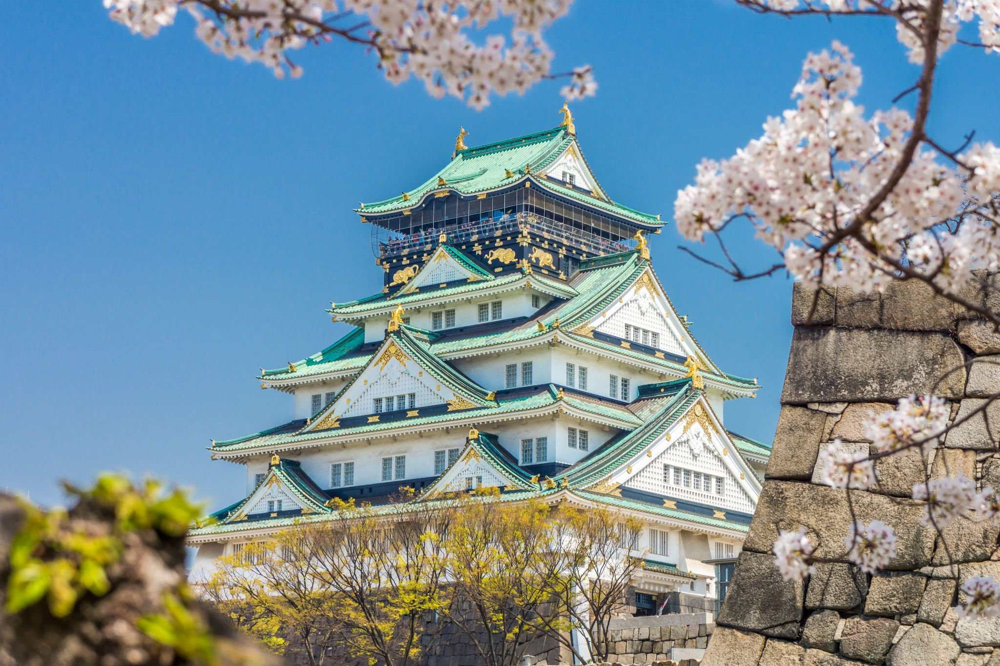

More about Osaka

Osaka is a lively port city in the Kansai region of Honshu, Japan, known for its modern architecture, vibrant nightlife, and hearty street food. At its heart stands Osaka Castle, one of Japan's most famous landmarks, surrounded by a scenic park and moat. Often called "the nation's kitchen," the city is a food lover's paradise, famous for dishes like takoyaki and okonomiyaki, and its friendly, down-to-earth locals make it one of Japan's most welcoming destinations.
Places to visit in Osaka
teamLab Osaka
An immersive digital art museum where interactive light installations respond to your movement — a one-of-a-kind experience blending art and technology.
Universal Studios Japan
One of the world's most popular theme parks, featuring Super Nintendo World, The Wizarding World of Harry Potter, and more.
Kuchu Teien Observatory
The "Floating Garden Observatory" atop the Umeda Sky Building, offering breathtaking 360° panoramic views across Osaka.